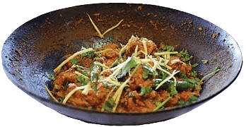
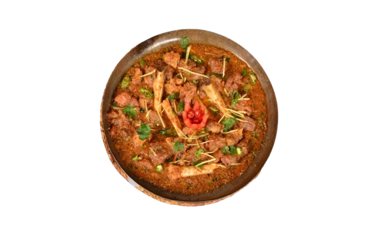
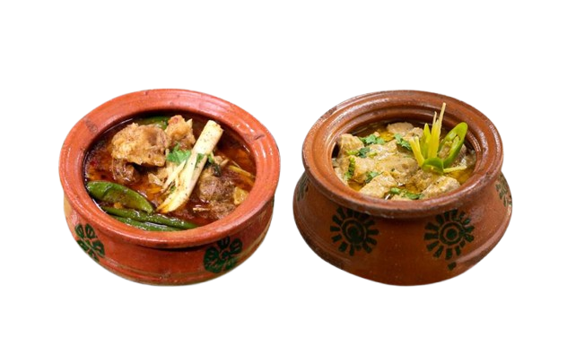

-
Chicken Karahi

Our Chicken Karahi is a vibrant mix of tender chicken, fresh tomatoes, and aromatic spices, cooked to perfection in a wok-style pan.
Order Now -
Beef Karahi
Juicy beef pieces slow-cooked with a rich tomato gravy, fresh green chilies, and a blend of traditional spices make our Beef Karahi unforgettable.
Order Now -
Mutton Karahi

Experience the succulent taste of our Mutton Karahi, cooked with bone-in mutton, a savory spice mix, and a touch of ginger for an authentic taste.
Order Now -
Handi Karahi

Our Handi Karahi, served in a traditional clay pot, combines tender meat, creamy gravy, and aromatic spices for a delightful and rustic flavor.
Order Now